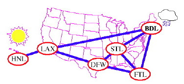
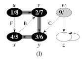
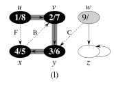
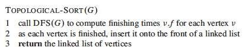

Outline
Tuesday
- Graph Definitions & examples
- Graph ADT
- Representations (Implementations) of Graph ADT
- Breadth-first Search
Thursday
- Depth-first Search
- Topological Sort
- Strongly Connected Components
- Related Concepts
The video lectures and notes below provide material not found in the textbook: defining graphs, an ADT, and implementations. This material is important for Project 2.
Graphs
Definitions
A graph G is a pair
G = (V, E)
where
V = {_v_1, _v_2, … _v_n}, a set of vertices
E = {e_1, _e_2, … _e_m} ⊆ _V ⊗ V, a set of edges.
Undirected Graphs
In an undirected graph the edge set E consists of unordered pairs of vertices. That is, they are sets e = {u, v}. Edges can be written with this notation when clarity is desired, but we will often use parentheses (u, v).
No self loops are allowed in undirected graphs. That is, we cannot have (v, v), which would not make as much sense in the set notation {v, v}.
We say that e = {u, v} is incident on u and v, and that the latter vertices are adjacent. The degree of a vertex is the number of edges incident on it.
The handshaking lemma is often useful in proofs:
Σ_v∈_V_degree(_v) = 2 E
(Each edge contributes two to the sum of degrees.)
Directed Graphs
In a directed graph or digraph the edges are ordered pairs (u, v).
We say that e = (u, v) is incident from or leaves u and is incident to or enters v. The in-degree of a vertex is the number of edges incident to it, and the out-degree of a vertex is the number of edges incident from it.
Self loops (v, v) are allowed in directed graphs.
Paths
A path of length k is a sequence of vertices ⟨v_0, _v_1, _v_2, … _v_k⟩ where (_v__i-1, v__i) ∈ E, for i = 1, 2, … k. (Some authors call this a “walk”.) The path is said to contain the vertices and edges just defined.
A simple path is a path in which all vertices are distinct. (The “walk” authors call this a “path”).
If a path exists from u to v we say that v is reachable from u.
In an undirected graph, a path ⟨v_0, _v_1, _v_2, … _v_k⟩ forms a cycle if _v_0 = _v_k and _k ≥ 3 (as no self-loops are allowed).
In a directed graph, a path forms a cycle if _v_0 = _v_k and the path contains at least one edge. (This is clearer than saying that the path contains at least two vertices, as self-loops are possible in directed graphs.) The cycle is simple if _v_1, _v_2, … _v_k are distinct (i.e., all but the designated start and end _v_0 = _v_k are distinct). A directed graph with no self-loops is also simple.
A graph of either type with no cycles is acyclic. A directed acyclic graph is often called a dag.
Connectivity
A graph G’ = (V’, E’) is a subgraph of G = (V, E) if V’ ⊆ V and E’ ⊆ E.
An undirected graph is connected if every vertex is reachable from all other vertices. In any connected undirected graph, |E| ≥ |V| - 1 (see also discussion of tree properties). The connected components of G are the maximal subgraphs G_1 … _G__k where every vertex in a given subgraph is reachable from every other vertex in that subgraph, but not reachable from any vertex in a different subgraph.
A directed graph is strongly connected if every two vertices are reachable from each other. The strongly connected components are the subgraphs defined as above. A directed graph is thus strongly connected if it has only one strongly connected component. A directed graph is weakly connected if the underlying undirected graph (converting all tuples (u, v) ∈ E into sets {u, v} and removing self-loops) is connected.
Variations
A bipartite graph is one in which V can be partitioned into two sets _V_1 and _V_2 such that every edge connects a vertex in _V_1 to one in _V_2. Equivalently, there are no odd-length cycles.
A complete graph is an undirected graph in which every pair of vertices is adjacent.
A weighted graph has numerical weights associated with the edges. (The allowable values depend on the application. Weights are often used to represent distance, cost or capacity in networks.)
Graph Size in Analysis
Asymptotic analysis is often in terms of both |V| and |E|. Within asymptotic notation we leave out the “|” for simplicity, for example, writing O(V + E), O(V_2 lg _E), etc.
Many Applications …
 
Graph ADT
These are detailed slightly more in Project 2, and in the Goodrich & Tamassia excerpt uploaded to Laulima.
Graph Accessors
numVertices()
Returns the number of vertices |V|
numEdges()
Returns the number of edges |E|
vertices()
Returns an iterator over the vertices V
edges()
Returns an iterator over the edges E
Accessing Undirected Graphs
degree(v)
Returns the number of edges (directed and undirected) incident on v.
adjacentVertices(v)
Returns an iterator of the vertices adjacent to v.
incidentEdges(v)
Returns an iterator of the edges incident on v.
endVertices(e)
Returns an array of the two end vertices of e.
opposite(v,e)
Given v is an endpoint of e.
Returns the end vertex of e different from v.
Throws InvalidEdgeException when v is not an endpoint of e.
areAdjacent(_v_1,_v_2)
Returns true iff _v_1 and _v_2 are adjacent by a single edge.
Accessing Directed Graphs
directedEdges()
Returns an iterator over the directed edges of G.
undirectedEdges()
Returns an iterator over the undirected edges of G.
inDegree(v)
Returns the number of directed edges (arcs) incoming to v.
outDegree(v)
Returns the number of directed edges (arcs) outgoing from v.
inAdjacentVertices(v)
Returns an iterator over the vertices adjacent to v by incoming edges.
outAdjacentVertices(v)
Returns an iterator over the vertices adjacent to v by outgoing edges.
inIncidentEdges(v)
Returns an iterator over the incoming edges of v.
outIncidentEdges(v)
Returns an iterator over the outgoing edges of v.
destination(e)
Returns the destination vertex of e, if e is directed.
Throws InvalidEdgeException when e is undirected.
origin(e)
Returns the origin vertex of e, if e is directed.
Throws InvalidEdgeException when e is undirected.
isDirected(e)
Returns true if e is directed, false otherwise
Mutators (Undirected and Directed)
insertEdge(u,v)
insertEdge(u,v,o)
Inserts a new undirected edge between two existing vertices, optionally containing object o.
Returns the new edge.
insertVertex()
insertVertex(o)
Inserts a new isolated vertex optionally containing an object o (e.g., the label associated with the vertex).
Returns the new vertex.
insertDirectedEdge(u,v)
insertDirectedEdge(u,v,o)
Inserts a new directed edge from an existing vertex to another.
Returns the new edge.
removeVertex(v)
Deletes a vertex and all its incident edges.
Returns object formerly stored at v.
removeEdge(e)
Removes an edge.
Returns the object formerly stored at e.
Annotators (for vertices and all types of edges)
Methods for annotating vertices and edges with arbitrary data.
setAnnotation(Object k, o)
Annotates a vertex or edge with object o indexed by key k.
getAnnotation(Object k)
Returns the object indexed by k annotating a vertex or edge.
removeAnnotation(Object k)
Removes the annotation on a vertex or edge indexed by k and returns it.
Changing Directions
There are various methods for changing the direction of edges. I think the only one we will need is:
reverseDirection(e)
Reverse the direction of an edge.
Throws InvalidEdgeException if the edge is undirected
Graph Representations
There are two classic representations: the adjacency list and the adjacency matrix.
In the adjacency list, vertices adjacent to vertex v are listed explicitly on linked list G.Adj[v] (assuming an array representation of list headers).
In the adjacency matrix, vertices adjacent to vertex v are indicated by nonzero entries in the row of the matrix indexed by v, in the columns for the adjacent vertices.
Adjacency List and Matrix representations of an undirected graph:

Adjacency List and Matrix representations of a directed graph:
_Consider this before reading on: What are the asymptotic complexities of these methods in each representation? _
- List vertices/edges
- areAdjacent
- access (out)AdjacentVertices or (out)IncidentEdges (outdegree)
- access (in)AdjacentVertices or (in)IncidentEdges (indegree)
Are edges first class objects in the above representations? Where do you store edge information in the undirected graph representations?
Complexity Analysis
Adjacency List
Space required: Θ(V + E).
Time to list all vertices adjacent to u: Θ(degree(u)).
Time to determine whether (u, v) ∈ E: O(degree(u)).
Adjacency Matrix
Space required: Θ(_V_2).
Time to list all vertices adjacent to u: Θ(V).
Time to determine whether (u, v) ∈ E: Θ(1).
So the matrix takes more space and more time to list adjacent matrices, but is faster to test adjacency of a pair of matrices.
“Modern” Adjacency Representation
Goodrich & Tamassia (reading in Laulima) propose a representation that combines an edge list, a vertex list, and an adjacency list for each vertex:

The sets V and E can be represented using a dictionary ADT (from Implementation Project #1). In many applications, it is especially important for V to enable fast access by key, and may be important to access in order. Each vertex object has an adjacency list I (I for incident), and the edges reference both the vertices they connect and the entries in this adjacency list. There’s a lot of pointers to maintain, but this enables fast access in any direction you need, and for large sparse graphs the memory allocation is still less than for a matrix representation.
See also Newman (2010) chapter 9, posted in Laulima, for discussion of graph representations.
BFS and DFS Overview
Before starting with Cormen et al.’s more complex presentation, let’s discuss how BFS and DFS can be implemented with nearly the same algorithm, but using a queue for BFS and a stack for DFS. You should be comfortable with this relationship between BFS/queues and DFS/stacks.
Sketch of both algorithms:
- Pick a starting vertex and put it on the queue (BFS) or stack (DFS)
- Repeat until the queue/stack is empty:
1. Dequeue (BFS) or pop (DFS) the next vertex v from the appropriate data structure
2. If v is unvisited,
- Mark v as visited (and process it as needed for the specific application).
- Find the unvisted neighbors of v and queue (BFS) or push (DFS) them on the appropriate data structure.
Try starting with vertex q and run this using both a stack and a queue:
BFS’s FIFO queue explores nodes at each distance before going to the next distance. DFS’s LIFO stack explores the more distant neighbors of a node before continuing with nodes at the same distance (“goes deep”).
Search in a directed graph that is weakly but not strongly connected may not reach all vertices.
Breadth-first Search
Given a graph G = (V,E) and a source vertex s ∈ V, output v.d, the shortest distance (# edges) from s to v, for all v ∈ V. Also record v.π = u such that (u,v) is the last edge on a shortest path from s to v. (We can then trace the path back.)
Analogy Send a “tsunami” out from s that first reaches all vertices 1 edge from s, then from them all vertices 2 edges from s, etc. Like a tsunami, equidistant destinations are reached at the “same time”.
Use a FIFO queue Q to maintain the wavefront, such that v ∈ Q iff the tsunami has hit v but has not come out of it yet.


At any given time Q has vertices with d values i, i, … i, i+1, i+1, … i+1. That is, there are at most two distances on the queue, and values increase monotonically.
Examples
Book’s Example: Undirected Graph
A directed example:
Let’s do another (number the nodes by their depth, then click to compare your answer):
Time Analysis
(This is an aggregate analysis.) Every vertex is enqueued at most once. We examine edge (u, v) only when u is dequeued, so every edge is examined at most once if directed and twice if undirected. Therefore, O(V + E).
Shortest Paths
Shortest distance δ(s, v) from s to v is the minimum number of edges across all paths from s to v, or ∞ if no such path exists.
A shortest path from s to v is a path of length δ(s, v).
It can be shown that BFS is guaranteed to find the shortest paths to all vertices from a start vertex s: v.d = δ(s, v), ∀ v at the conclusion of the algorithm. See book for tedious proof.
Informally, we can see that all vertices at distance 1 from s are enqueued first, then via them all nodes of distance 2 are reached and enqueued, etc., so inductively it would be a contradiction if BFS reached a vertex c by a longer path than the shortest path because the last vertex u on the shortest path to the given vertex v would have been enqueued first and then dequeued to reach v.
Breadth-First Trees
The predecessor subgraph of G is
Gπ = (Vπ, Eπ) where
Vπ= {v ∈ V : v.π ≠ NIL} ∪ {s} and
Eπ = {(v.π, v) : v ∈ Vπ - {s}}
A predecessor subgraph Gπ is a breadth-first tree if Vπ consists of exactly all vertices reachable from s and for all v in Vπ the subgraph Gπ contains unique simple and _ shortest_ paths from s to v.
BFS constructs π such that Gπ is a breadth-first tree.
Depth-first Search
Given G = (V, E), directed or undirected, DFS explores the graph from every vertex (no source is vertex given), constructing a forest of trees and recording two time stamps on each vertex:
- v.d = discovery time
- v.f = finishing time
Time starts at 0 before the first vertex is visited, and is incremented by 1 for every discovery and finishing event (as explained below). These attributes will be used in other algorithms later on.
Since each vertex is discovered once and finished once, discovery and finishing times are unique integers from 1 to 2|V|, and for all v, v.d < v.f.
(Some presentations of DFS pose it as a way to visit nodes, enabling a given method to be applied to the nodes with no output specified. Others present it as a way to construct a tree. The CLRS presentation is more complex but supports a variety of applications.)
DFS explores every edge and starts over from different vertices if necessary to reach them (unlike BFS, which may fail to reach subgraphs not connected to s).
As it progresses, every vertex has a color:
WHITE = undiscovered
GRAY = discovered, but not finished (still exploring vertices reachable from it)
_v_._d_ records the moment at which _v_ is _discovered_ and colored gray.
BLACK = finished (have found everything reachable from it)
_v_._f_ records the moment at which _v_ is _finished_ and colored black.

Pseudocode

While BFS uses a queue, DFS operates in a stack-like manner (using the implicit recursion stack in the algorithm above).
- BFS’s FIFO queue explores nodes at each distance before going to the next distance
- DFS’s implicit LIFO stack explores the more distant neighbors of a node before continuing with nodes at the same distance (“goes deep”).
Another major difference in the algorithms as presented here is that DFS will search from every vertex until all edges are explored, while BFS only searches from a designated start vertex.
- This is not an essential difference: both could be either restricted to a start vertex or run from all vertices;
- This reflects how the algorithms are used in practice (BFS for finding shortest paths; DFS for exposing structure of the graph, as will be explained shortly).
Example:
One could start DFS with any arbitrary vertex, and continue at any remaining vertex after the first tree is constructed. Regularities in the book’s examples (e.g., processing vertices in alphabetical order, or always starting at the top of the diagram) do not reflect a requirement of the algorithm.


 



Let’s do this example (start with the upper left node, label the nodes with their d and f, then click to compare your answer):

Time Analysis
The analysis uses aggregate analysis, and is similar to the BFS analysis, except that DFS is guaranteed to visit every vertex and edge, so it is Θ not O:
Θ(V) to visit all vertices in lines 1 and 5 of
DFS;
Σ_v∈_V |Adj(v)| = Θ(E) to process the adjacency lists in line 4 of DFS-
Visit.
(Aggregate analysis: we are not attempting to count how many times the loop of line 4 executes each time it is encountered, as we don’t know |Adj(v)|. Instead, we sum the number of passes through the loop in total: all edges will be processed.)
The rest is constant time.
Therefore, Θ(V + E).
Classification of Edges
This classification will be useful in forthcoming proofs and algorithms.
- Tree Edge: in the depth-first forest constructed by DFS: found by exploring (u,v).
- Back Edge: (v,u), where v is a descendant of u.
- Forward Edge: (u,v), where v is a descendant of u but not a tree edge.
- Cross Edge: any other edge. They can go between vertices in the same depth-first tree or in different depth-first trees.
Here’s a graph with edges classified, and redrawn to better see the structural roles of the different kinds of edges:

DFS Properties
These theorems show important properties of DFS that will be used later to show how DFS exposes properties of the graph.
Parentheses Theorem
After any DFS of a graph G, for any two vertices u and v in G, exactly one of the following conditions holds:
- The intervals [u.d, u.f] and [v.d, v.f] are entirely disjoint, and neither u nor v is a descendant of the other in the DFS forest.
- The interval [u.d, u.f] is contained entirely within the interval [v.d, v.f], and u is a descendant of v in a DFS tree.
- The interval [v.d, v.f] is contained entirely within the interval [u.d, u.f], and v is a descendant of u in a DFS tree.
Essentially states that the d and f visit times are well nested. See text for proof. For the above graph:
Corollary: Nesting of Descendant’s Intervals
Vertex v is a proper descendent of vertex u in the DFS forest of a graph iff u.d < v.d < v.f < u.f. (Follows immediately from parentheses theorem.)
Also, (u, v) is a back edge iff v.d ≤ u.d < u.f ≤ v.f; and a cross edge iff v.d < v.f < u.d < u.f.
White Path Theorem
Vertex v is a descendant of u iff at time u.d there is a path from u to v consisting of only white vertices (except for u, which was just colored gray).
(Proof in textbook uses v.d and v.f. Metaphorically and due to its depth-first nature, if a search encounters an unexplored location, all the unexplored territory reachable from this location will be reached before another search gets there.)
DFS Theorem
DFS of an undirected graph produces only tree and back edges: never forward or cross edges.
(Proof in textbook uses v.d and v.f. Informally, this is because the edges being bidirectional, we would have traversed the supposed forward or cross edge earlier as a tree or back edge.)
Topological Sort
A directed acyclic graph (DAG) is a good model for processes and structures that have partial orders: You may know that a > c and b > c but may not have information on how a and b compare to each other.
One can always make a total order out of a partial order. This is what topological sort does. A topological sort of a DAG is a linear ordering of vertices such that if (u, v) ∈ E then u appears somewhere before v in the ordering.
Outline of Algorithm:
Topological-Sort(G) is actually a modification of DFS(G) in which each
vertex v is inserted onto the front of a linked list as soon as finishing
time v.f is known.
Examples
Some real world examples include
- Scheduling 100,000 independent tasks on a high performance computing system (research by Dr. Henri Casanova) Producing 5,000,000 documents that reference each other such that each document is produced before the ones that reference it.
Here is the book’s example … a hypothetical professor (not me!) getting dressed (what node did they start the search at? Could it have been done differently?):

We can make it a bit more complex, with catcher’s outfit (click to compare your answer):

The answer given starts with the batting glove and works left across the unvisted nodes. What if we had started the search with socks and worked right across the top nodes? If you put your clothes on differently, how could you get the desired result? Hint: add an edge.
As noted previously, one could start with any vertex, and once the first tree was constructed continue with any artibrary remaining vertex. It is not necessary to start at the vertices at the top of the diagram. Do you see why?

Time Analysis
Time analysis is based on simple use of DFS: Θ(V + E).
Correctness
Lemma: A directed graph G is acyclic iff a DFS of G yields no back edges.
See text for proof, but it’s quite intuitive:
⇒ A back edge by definition is returning to where one started, which means it completes a cycle.
⇐ When exploring a cycle the last edge explored will be a return to the vertex by which the cycle was entered, and hence classified a back edge.
Theorem: If G is a DAG then Topological-Sort(G) correctly produces a topological sort of G.
It sufficies to show that
if (u, v) ∈ E then v.f < u.f
because then the linked list ordering by f will respect the graph topology).
When we explore (u, v), what are the colors of u and v?
- u is gray, because it is being explored when (u, v) is found.
- Can v be gray too? No, because then v would be an ancestor of u, meaning (u, v) is a back edge, contradicting the DAG property by the lemma above.
- Is v white? Then it becomes a descendant of u. By the parentheses theorem, u.d < v.d <v.f < u.f.
- Is v black? Then v is finished. Since we are exploring (u, v) we have not finished u. Therefore v.f < u.f.
Strongly Connected Components
Given a directed graph G = (V, E), a strongly connected component (SCC) of G is a maximal set of vertices C ⊆ V such that for all u, v ∈ C, there is a path both from u to v and from v to u.
Example:
What are the Strongly Connected Components? (Click to see.)
Algorithm
The algorithm uses GT= (V, ET), the transpose of G = (V, E). GT is G with all the edges reversed.
Strongly-Connected-Components (G)
1. Call DFS(G) to compute finishing times _u_._f_ for each vertex _u_ ∈ _E_.
2. Compute _GT_
3. Call modified DFS(_GT_) that considers vertices
in order of decreasing _u_._f_ from line 1.
4. Output the vertices of each tree in the depth-first forest
formed in line 3 as a separate strongly connected component.
Example 1
First Pass of DFS:

Second Pass of DFS:
Why it Works
Informal Explanation
(This is from my own attempt to understand the algorithm. It differs from the book’s formal proof.)
G and GT have the same SCC. Proof:
- If u and v are in the same SCC in G, then there is a path p_1 from _u to v and a path p_2 from _v to u.
- Reversing the edges, path p_1 becomes a path from _v to u and p_2 becomes a path from _u to v.
A DFS from any vertex v in a SCC C will reach all vertices in C (by definition of SCC).
- Then why can’t we call DFS on unvisited vertices to find the SCCs in the first pass, line 1?
- Because this first unconstrained DFS could also get vertices not in C, as there may be a path from v in C to v’ where there is no path from v’ to v (so v’ is not in C)!
So how does the second search on GT help avoid inadvertent inclusion of v’ in C?
- v’ will have an earlier finishing time than some of the other vertices in C, because at least some of those vertices (in particular, v from which v’ was reached) are still active (gray) when v’ is finished (Parentheses Theorem).
- In the second search, the component C to which v belongs is processed before v’ and its component, because v has a later finishing time, so the entire component will be explored before other components (in particular, that containing v’).
- Since GT has the same SCC as G, the component found from v in the second search is the same component as in the previous search.
- But in this second search, v’ will not be reached. Why? Because we are using reversed edges in GT. If v’ could be reached from C in GT, then v would be reachable from v’ in G, and so v’ would be a member of C, a contradiction.
- So, due to the topological sort, the trees constructed in the second search cannot contain vertices v’ that do not belong to the SCC of the other vertices in the tree. This along with the fact that any DFS from a vertex v in a SCC C will find all vertices in C means that the trees constructed by the second DFSs find exactly the vertices in the SCCs.
In the example above, notice how node c corresponds to v and g to v’ in the argument above. But we need to also say why nodes like b will never be reached from c in the second search. It is because b finished later in the first search, so was processed earlier and already “consumed” by the correct SCC in the second search, before the search from c could reach it. The following fact is useful in understanding why this would be the case.
Component Graph
- Define GSCC to be a graph of the SCCs of G obtained by collapsing all the vertices in each SCC into one vertex for the component but retaining the edges between SCCs.
- Then this component graph GSCC is a Directed Acyclic Graph. (If there were any cycles, vertices in each component would be reachable from all others, so they would be one component.)
Here is GSCC for the above example:

The first pass of the SCC algorithm essentially does a topological sort of the graph GSCC (by doing a topological sort of constituent vertices). The second pass visits the components of GTSCC in topologically sorted order such that each component is searched before any component that can reach that component.
Thus, for example, the component abe is processed first in the second search, and since this second search is of GT (reverse the arrows above) one can’t get to cd from abe. When cd is subsequently searched, one can get to abe but it’s vertices have already been visited so can’t be incorrectly included in cd.
Example 2
Start at the node indicated by the arrow; conduct a DFS; then click to compare your answer:

Analysis
We have provided an informal justification of correctness: please see the CLRS book for a formal proof of correctness for the SCC algorithm.

The CLRS text says we can create GT in Θ(V + E) time using adjacency lists.
- The easy approach is to simply copy the graph, but given the size of some graphs we work with, it would be much better to reverse the edges in place (and reverse them back when done).
- _ Problem for class: How can this be done? (A naive implementation could end up undoing some of its own work, as it confuses already-reversed edges with those to be reversed.)_
The SCC algorithm also has two calls to DFS, and these are Θ(V + E) each.
All other work is constant, so the overall time complexity is Θ(V + E).
Related Graph Concepts

An articulation point or cut vertex is a vertex that when removed causes a (strongly) connected component to break into two components.
A bridge is an edge that when removed causes a (strongly) connected component to break into two components.
A biconnected component is a maximal set of edges such that any two edges in the set lie on a common simple cycle. This means that there is no bridge (at least two edges must be removed to disconnect it). This concept is of interest for network robustness.
Up Next
We take a brief diversion from graphs to introduce amortized analysis and efficient processing of union and find operations on sets, both of which will be used in subsequent work on graphs. Then we return to graphs with concepts of minimum spanning trees, shortest paths, and flows in networks.
Dan Suthers Last modified: Sat Mar 8 00:37:35 HST 2014
Some images are from the instructor’s material for Cormen et al. Introduction
to Algorithms, Third Edition.